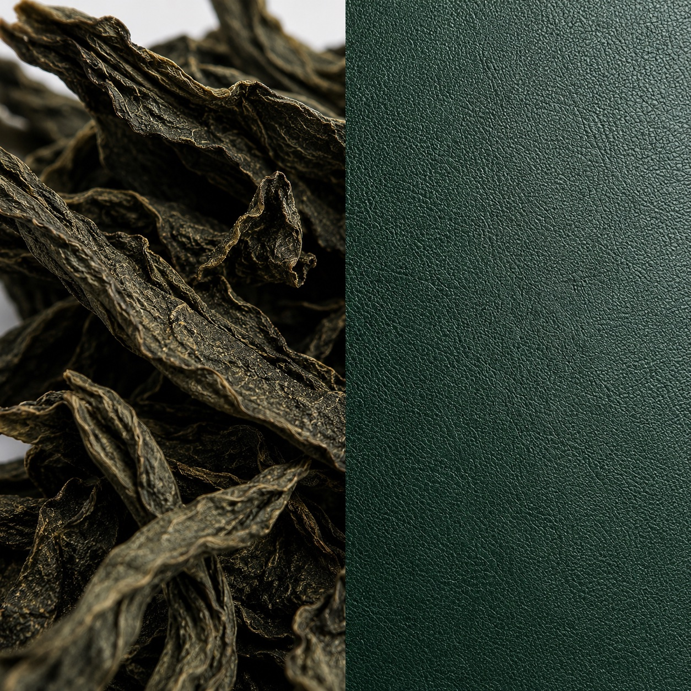

Source · Camellia sinensis Finish · Bio-PU coating Macro · 1:1 · 90 mm Hue · Kelp / 2A3A2C ASOURCE BSURFACE — Section 02 / 02A premium bio-based leather alternative co-developed exclusively for Oliver Co. Engineered for longevity. Renewable by design.
Tea leaves recovered post-brew from supply partners across the UK and Anatolia. Sun-dried, graded, and milled.
Milled leaf is suspended in a partly bio-derived polyurethane and drawn to consistent thickness on a calender line.
The composite is fused to a recycled polyester canvas substrate, cured at low temperature in a solar-powered facility.
A final embossing and matte hand-finish develops the grain. Inspected, indexed, and released against lot 04 / 24.
Pigmented through the bio-resin layer rather than printed. Each surface continues to settle and deepen with use.